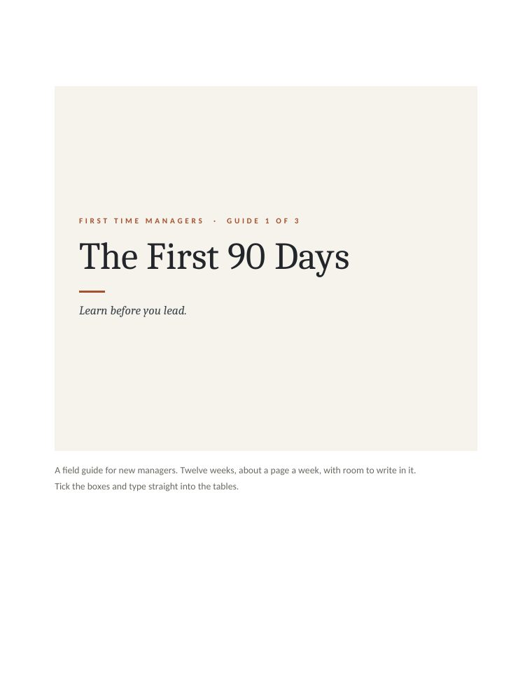
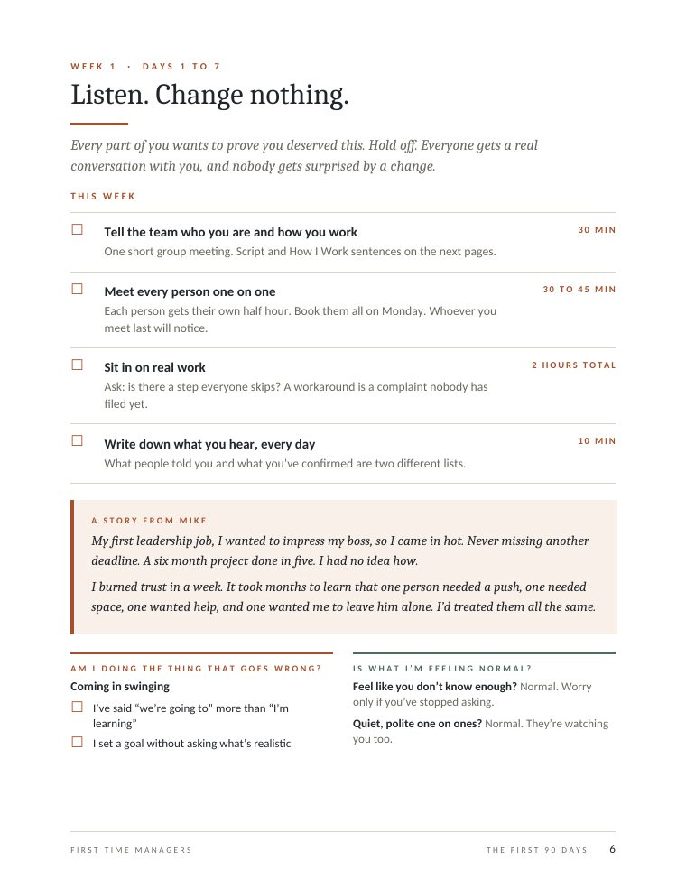
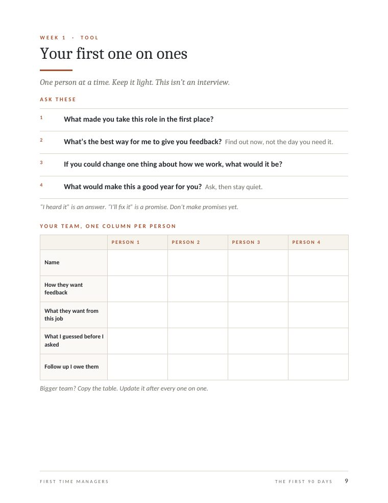
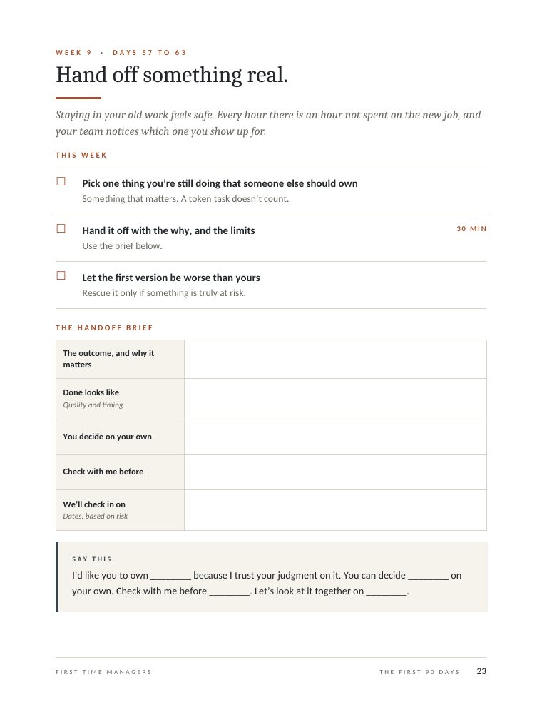

Your first 90 days come down to three jobs. In month 1 you listen. In month 2 you make expectations clear. In month 3 you hand off real work and review it all with your boss. This page walks through all twelve weeks, and the free workbook has every script and worksheet in one Word file.
The First 90 Days workbook
28 pages. One page for each week, with the exact things to do, say and write down. Tick the boxes and type straight into the tables, in Word.
- 12 weekly plans, from Day 1 to the 90 day review
- 20 plus scripts and worksheets to fill in
- Split paths for promoted from the team and new to the team
- A "going wrong or normal?" check for each month
Free. No signup.




| Month | The job | Weeks |
|---|---|---|
| Month 1 | Listen, meet everyone, line up with your boss. Change almost nothing. | 1 to 4 |
| Month 2 | Say what good looks like, build a real one on one rhythm, cut the list, fix one thing. | 5 to 8 |
| Month 3 | Hand off real work, write things down, and review the 90 days with your boss. | 9 to 12 |
Day 1 as a new manager: walk in curious
Nobody expects you to fix anything on day one. Your team is deciding whether you are easy to talk to, so today is for names, questions, and getting a one on one on every calendar.
- Learn every name and what each person doesCheck how each name is pronounced. People notice when you try.20 min
- Pick one sentence about why you are glad to be hereYou will say it about twenty times. Make it true.5 min
- Say hello to each person before any meetingAsk what they are working on, and ask one thing you do not know. Do not offer an opinion yet.30 min
- Put a one on one on the calendar with every person this weekSend the invites tonight so they are waiting tomorrow.10 min
- Write three things that surprised youBy week 3 you will have stopped noticing them.5 min
- Ask your boss what you should be careful about this weekA short answer is fine. You are learning how they think.5 min
If you were promoted from the team: everyone already knows you, so the question is what changes. Skip the speech. Say hello the way you always have, then book the one on ones.
If you came in from outside: nobody has a picture of you yet. Say who you are in two sentences and spend the rest of the day asking what they are working on.
In the workbook page 5, your Day 1 checklist. Download it free →
Week 1: listen and change nothing
Every part of you wants to prove you deserved this. Hold off. Everyone gets a real conversation with you, and nobody gets surprised by a change.
- Tell the team who you are and how you workOne short group meeting. The script is below.30 min
- Meet every person one on oneEach person gets their own half hour. Book them all on Monday. Whoever you meet last will notice.30 to 45 min
- Sit in on real workAsk: is there a step everyone skips? A workaround is a complaint nobody has filed yet.2 hours total
- Write down what you hear, every dayWhat people told you and what you have confirmed are two different lists.10 min
My first leadership job, I wanted to impress my boss, so I came in hot. Never missing another deadline. A six month project done in five. I had no idea how.
I burned trust in a week. It took months to learn that one person needed a push, one needed space, one wanted help, and one wanted me to leave him alone. I had treated them all the same.
What to say in your first team meeting
Hi everyone, I am ________, your new ________. I have spent ___ years working on ________, and I have a lot to learn about how things work here.
My priority right now is not changing things. It is getting to know each of you. I would love to hear your role, what you like working on, and anything I should know.
I know this is a little different now that I am your manager. Here is what I do not want to change, and here is what will be different.
Notice who talks first and who stays quiet. Do not comment on it yet. If someone on the team also wanted your job, have that one on one first.
Four questions for your first one on ones
- What made you take this role in the first place?
- What is the best way for me to give you feedback? (Find out now, not the day you need it.)
- If you could change one thing about how we work, what would it be?
- What would make this a good year for you? (Ask, then stay quiet.)
“I heard it” is an answer. “I will fix it” is a promise. Do not make promises yet.
How your team learns about you
They will not say what they think yet. They will show it in how they act around you, and they are watching how you act first.
| What they see you do | What they take from it |
|---|---|
| Who you talk to first | Who you trust, and who does not count. |
| Whether you ask before you change something | Whether their experience matters to you. |
| How you react to the first bit of bad news | Whether it is safe to bring you the next one. |
| Whether you do the small thing you said you would do | Whether to believe the big things. |
If you were promoted: your friends are now your team
A friend of mine was the most liked of twelve project managers. I promoted her to run the group, and she kept going to lunch with everyone like always.
It could not last. Her job now was to hit numbers, which meant pushing people. If she went soft, her team would pay for it.
Then she stopped getting invited to lunch, and found a team Slack channel she was not in. I told her this was normal. People need somewhere to vent that does not include the boss. Do not force your way in. She never invited me to every lunch either.
- Say the shift out loud, once. Use the "what will be different" line above.
- Talk early to anyone who wanted your job. If you wait, it becomes a story the team tells without you.
- Watch where your time and information go. If your old lunch crowd hears things first, everyone notices.
Everybody wants something different
Nobody teaches this, and it changes how you manage every person.
I have always been driven by money and title, so I assumed everyone was. Some of my best people wanted to leave at five and never work a weekend. They wanted stable. I had been managing them like they wanted my life instead of theirs.
| They want | What helps | What backfires |
|---|---|---|
| Money and title | A clear path with real dates. | Vague promises about someday. |
| Stability | Predictable hours, early notice, a protected weekend. | A 4:45 request. Reading limits as low ambition. |
| Learning | New problems, someone to learn from. | The same work forever. |
| Recognition | Specific praise, sometimes in public. | A generic "great job." |
| Autonomy | A clear outcome, then room. | Hovering and status checks. |
| Belonging | Time with the team, being asked. | Weeks without a real conversation. |
Most people are a mix. Use this to notice, not to label. And never use what someone tells you as leverage later.
If the team already seems to dislike you
- Check whether it is one person or the whole room. One cold person on a team of eight is a person. Four is a pattern.
- Find out what happened before you arrived: a reorg, a bad manager, a colleague passed over.
- Say it once, privately: "I get the sense this hasn't been easy. What would I need to do for it to feel better?" Then listen.
- Keep one small promise, where people can see it. Trust comes back in small deliveries, not speeches.
Check yourself
Going wrong: you have said "we are going to" more than "I am learning," or you set a goal without asking what is realistic. Normal: feeling like you do not know enough, and quiet, polite one on ones. Worry only if you have stopped asking.
In the workbook pages 6 to 11: the week 1 plan, how your team learns about you, your intro script, the one on one tracker, the promoted page and the motivation table. Download it free →
Week 2: find out what your boss needs
One boss lives in the metrics. Another in the budget. Another only cares whether customers are happy. Do not assume yours wants what your last one did.
- Have the day 90 conversationWrite your own answer first and bring it.45 min
- Email back what you heard, the same dayAny mismatch shows up now instead of in month five.15 min
- Get the numbers your boss reports upwardAnd where your team stands on each. No baseline is a finding.30 min
- Set a standing weekly one on one with your bossBring what moved, what is at risk, and what you need.5 min
At the end of 90 days, what would make you confident I am succeeding? What must not slip while I am learning? Which decisions are mine, and which should I bring to you first?
If you hear "just get up to speed," ask what that would look like on a Friday afternoon.
Thanks for today. Here is what I heard: success at day 90 looks like ________. What cannot slip is ________. I will decide ________ on my own and bring ________ to you. If I have got any of it wrong, tell me this week.
Learn how your boss works
They will tell you in pieces over the first month. Write each piece down while it is fresh: how they like to get news, how often they want to hear from you, what makes them nervous, what a good update sounds like to them, and how they react to bad news the first time you bring it.
In the workbook pages 12 and 13, the boss conversation scripts and the worksheet for how your boss works. Download it free →
Week 3: meet your peers before you need them
What slows new managers down in month two is usually someone outside the team they have not met. Meet them now, while you need nothing.
- List the three to five people your team depends on mostWho hands your team work, and who receives it.15 min
- Meet each one, with nothing to ask forAsk what your team does that matters most to theirs, and what you should tell them earlier.20 min each
- Find who your predecessor always looped inUsually someone in finance, legal, or ops.
- Pick one peer you can be honest withSomeone who will tell you how things really work.
It gets lonely
Around now you notice you cannot vent to your team like you used to, and the other managers are not really your peers yet. You are between groups for a while. It is normal and it ends, faster if you have somewhere to put it: a manager outside your team, someone from a past job, and your honest peer.
Do not vent to your team about your boss or the company. It feels like honesty. It lands like a weight.
Going wrong: putting off a conversation to stay popular, or bending a standard for a friend. Normal: not being invited to lunch anymore, or someone cold if they wanted your job. Talk to them early.
In the workbook pages 14 and 15, the week 3 plan and the map of people you depend on. Download it free →
Week 4: write the month 1 readout
One page on what you learned, in your boss's hands before they ask for it.
- Close every "I do not know yet"Answer it, or give a new date.
- Write the readout and walk your boss through itIf it takes more than fifteen minutes to read, cut it.45 min
- Tell the team one thing you heard and one thing you will doSmall is fine. They are watching for follow through.10 min
What goes on the readout
- What I have learned: the three things that matter most.
- What is working that I will protect.
- What I am not changing yet, and why.
- What I will do in month 2: three things at most.
- What I need from you.
Month 1 is done when you have had a real one on one with everyone, you and your boss agree in writing on what success looks like at day 90, you have met the people your team depends on, and you have told the team one thing you heard and one thing you will do.
In the workbook page 16, the readout worksheet and the month 1 checklist. Download it free →
Week 5: say what good looks like
Most early friction is two people with different definitions of a good job, each assuming the other knows.
- Write what good looks like for each roleThe outputs they own, the quality bar, and how they flag problems.30 min a role
- Ask each person to write their own version firstIf they see yours first, they will just agree with it.5 min
- Book 45 minutes with each person for next weekTell them what you are asking for so they can come ready.10 min
Three lines: what you think this job is for, what a great month looks like, and what gets in your way.
In the workbook page 18, the "what good looks like" worksheet. Download it free →
Week 6: compare the two lists
The gap between what you wrote and what they wrote is the conversation. Do not rush to close it.
- Compare the two lists side by side in a one on oneStart with where you agree.45 min
- Write down what you agreedSend it to them the same day.10 min
- Book a recheckFour weeks out. Expectations drift if nobody looks.5 min
The three usual gaps
| Gap | Sounds like | How to close it |
|---|---|---|
| Priority | They are busy on something you see as low value. | Name which work actually moves the business. |
| Quality | Their "done" is your rough draft. | Show a real example of finished. |
| Autonomy | They think good means asking first. You think it means deciding. | Say exactly which decisions are theirs. |
I want us to have the same picture of success. Here is what I think this role needs to deliver. How does that compare with yours? Where are we not lined up yet?
Going wrong: saying "be more proactive" without saying what you mean, or holding someone to a standard you never said out loud. Normal: they push back on your list. Better now than at review time.
In the workbook page 19, the comparison script and the three gaps. Download it free →
Week 7: make one on ones do real work
A one on one that gets moved twice teaches people it is optional. Make it the most reliable meeting on your calendar.
- Lock the one on one rhythmSame time weekly. One running shared doc. They add to it during the week.
- Let them own the first halfTheir agenda first. Status updates belong in a tracker, not here.
- Ask for feedback on yourself, specifically"What is one thing I could do differently in our one on ones?"5 min each
- Change one small thing because of what you heard, and say soSilence after asking teaches people not to bother.
The 30 minute one on one
| Time | What happens |
|---|---|
| 5 min | Check in. "What is top of mind? Doesn't have to be work." |
| 10 min | Their agenda. Whatever they added to the doc. |
| 10 min | Follow ups. "Last time you mentioned this. Where did it land?" and "What is in your way that I could remove?" |
| 5 min | Close. Who owns what, by when. |
"What is in your way that I could remove?" is the question most one on ones skip.
In the workbook page 20, the 30 minute agenda. Download it free →
Week 8: cut the list and fix one thing
A team with ten priorities has none. And one small fix people can feel beats a strategy nobody reads.
- Ask three people, separately, what the top priority isThree different answers means a focus problem.15 min
- Name the one or two things that matter most, out loudSay what is waiting, too. Not doing something on purpose is a decision.
- Pick one annoyance from month 1 and fix it fastChoose by how fast people will feel it, not how impressive it looks.
- Announce it before you do itA quiet fix gets a fraction of the credit for the same work.
We can take this on, but something else moves. Right now it is ________ and ________. Which matters more, and what are we willing to delay?
Month 2 is done when every person and you agree on what good looks like in writing, one on ones happen every week and they own the agenda, you asked for feedback on yourself and changed something, the team can name its top one or two priorities, and one fix is announced and underway.
In the workbook page 21, the priority script and the month 2 checklist. Download it free →
Week 9: hand off something real
Staying in your old work feels safe. Every hour there is an hour not spent on the new job, and your team notices which one you show up for.
- Pick one thing you are still doing that someone else should ownSomething that matters. A token task does not count.
- Hand it off with the why, and the limitsUse the brief below.30 min
- Let the first version be worse than yoursRescue it only if something is truly at risk.
The handoff brief
- The outcome, and why it matters.
- What done looks like: quality and timing.
- What they decide on their own.
- What they check with you before doing.
- When you will check in, based on risk.
I would like you to own ________ because I trust your judgment on it. You can decide ________ on your own. Check with me before ________. Let us look at it together on ________.
Going wrong: taking the work back at the first wobble, or staying the only person who can approve every step. Normal: the first version is slower and worse than yours, and handing work away feels a little guilty. That is the job now.
In the workbook page 23, the handoff brief worksheet. Download it free →
Week 10: get it out of one person's head
Every team has something only one person knows how to do. That is a risk to them and to you.
- Have each person list the work only they know how to doAsk in a one on one, not a group.15 min
- Pick the riskiest one and give it an owner and a deadlineThe one that hurts most if that person is out for a week.
- Write the first version down on one shared templateFive steps, not fifty. It can be rough.
- Have someone else follow itWherever they get stuck is where the page is missing something.
In the workbook page 24, the table for work that lives in one person's head. Download it free →
Week 11: close the loops
Finish what you started in months 1 and 2, and start collecting proof that things changed.
- Finish the visible fix and name it again"Here is what you flagged. Here is what changed."
- Recheck expectations with each personIs what we wrote still true? Change whatever is not.20 min each
- Ask for feedback on yourself againAsk once and it is an event. Ask on a schedule and it is a habit.5 min each
- List what changed and who noticedYou will need it for the review next week.20 min
In the workbook page 25, the proof list. Download it free →
Week 12: the 90 day review
A clear picture of what changed, what did not, and what is next. It is not a graduation.
- Write the 90 day summaryOne page: what I learned, what changed and the proof, what still needs attention, what I need from you.45 min
- Walk your boss through itBring the summary and the proof list. Let them react before you defend anything.45 min
- Agree on next quarter with your bossThree priorities at most, each with an owner and a date.45 min
- Tell the team where you landedWhat you learned, what changed, and what is next. They helped build it.15 min
Here is what I understand now that I did not when I started. Here is what improved, what did not, and what I think we should focus on next. Where does your view differ from mine?
Here is what I learned from you in the first 90 days, here is what we changed, and here is what we are working on next. Thanks for being patient while I figured it out.
In the workbook pages 26 and 27, the 90 day summary and the boss script. Download it free →
Days 85 to 90: check the foundation
Nothing new to start. Here is how to know it worked.
- Everyone on my team knows what good looks like, and so do I.
- One on ones happen every week, and they lead them.
- My boss and I agree on how I am doing, and on next quarter.
- I know the people my team depends on, and they know me.
- Something real is owned by someone who is not me.
- At least one process lives on paper, not in one person's head.
- The team felt one thing get better.
Next is day 90 to month 6, where the conversations get harder: performance, your first real conflict, your first review cycle. That is The Hard Middle.
In the workbook page 28, the day 90 checklist. Download it free →
First 90 days as a manager: common questions
What should a new manager do in the first 90 days?
Spend month 1 listening: meet everyone one on one, learn what your boss needs, and change almost nothing. In month 2, write down what good looks like for each person, build a weekly one on one, and fix one visible thing. In month 3, hand off real work, document what only one person knows, and review the 90 days with your boss.
What should I do in my first week as a new manager?
Tell the team who you are and how you work, meet every person one on one, sit in on real work, and write down what you hear each day. Do not change anything yet. The first week decides whether people think you will listen.
What is a 30 60 90 day plan for a new manager?
It is the same plan in three stages. Days 1 to 30 are for learning: your team, your boss, your peers. Days 31 to 60 are for clarity: expectations, one on ones, priorities. Days 61 to 90 are for making it last: delegation, written processes, and a review with your boss. The workbook lays it out week by week.
How is the first 90 days different if I was promoted from my own team?
You skip the introductions but you inherit harder ones. Your friends are now your team, so name the shift out loud once, talk early to anyone who wanted the job, and watch where your time and information go. Most of the plan still applies.
How do I run my first one on one as a new manager?
Keep it light and let them talk. Ask what made them take the role, how they like to get feedback, what they would change about how the team works, and what would make this a good year. Do not make promises yet. Write down what you heard afterward.
Is the First 90 Days workbook free?
Yes. It is a 28 page Word document with a page for each week, plus the scripts and worksheets. You can tick the boxes and type into the tables. No signup is needed.